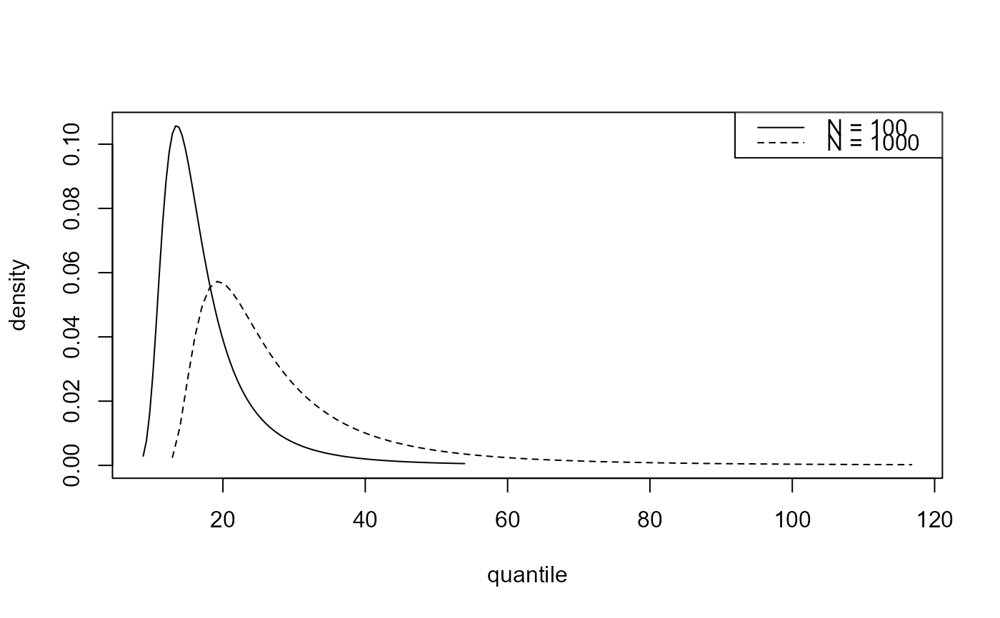

Predictive inference for the largest value observed in \(N\) years.
Source:R/predictive.R
predict.evpost.Rdpredict method for class "evpost". Performs predictive inference
about the largest value to be observed over a future time period of
\(N\) years. Predictive inferences accounts for uncertainty in model
parameters and for uncertainty owing to the variability of future
observations.
Arguments
- object
An object of class
"evpost", a result of a call torpostorrpost_rcppwithmodel = "gev",model = "os",model = "pp"ormodel == "bingp". Calling these functions after a call torpostorrpost_rcppwithmodel == "gp"will produce an error, because inferences about the probability of threshold exceedance are required, in addition to the distribution of threshold excesses. The model is stored inobject$model.objectmay also be an object created within the functionpredict.blitein thelitepackage. In this caseobject$sim_valshas a column named"theta"containing a posterior sample of values of the extremal index.- type
A character vector. Indicates which type of inference is required:
"i" for predictive intervals,
"p" for the predictive distribution function,
"d" for the predictive density function,
"q" for the predictive quantile function,
"r" for random generation from the predictive distribution.
- x
A numeric vector or a matrix with
n_yearscolumns. The meaning ofxdepends ontype.type = "p"ortype = "d":xcontains quantiles at which to evaluate the distribution or density function.If
object$model == "bingp"then no element ofxcan be less than the thresholdobject$thresh.If
xis not supplied thenn_year-specific defaults are set: vectors of lengthx_numfrom the 0.1% quantile to the 99% quantile, subject all values being greater than the threshold.type = "q":xcontains probabilities in (0,1) at which to evaluate the quantile function. Any values outside (0, 1) will be removed without warning.If
object$model == "bingp"then no element ofpcan correspond to a predictive quantile that is below the threshold,object$thresh. That is, no element ofpcan be less than the value ofpredict.evpost(object,type = "q", x = object$thresh).If
xis not supplied then a default value ofc(0.025, 0.25, 0.5, 0.75, 0.975)is used.type = "i"ortype = "r":xis not relevant.
- x_num
A numeric scalar. If
type = "p"ortype = "d"andxis not supplied thenx_numgives the number of values inxfor each value inn_years.- n_years
A numeric vector. Values of \(N\).
- npy
A numeric scalar. The mean number of observations per year of data, after excluding any missing values, i.e. the number of non-missing observations divided by total number of years' worth of non-missing data.
If
rpostorrpost_rcppwas called withmodel == "bingp"thennpymust either have been supplied in that call or be supplied here.Otherwise, a default value will be assumed if
npyis not supplied, based on the value ofmodelin the call torpostorrpost_rcpp:model = "gev":npy= 1, i.e. the data were annual maxima so the block size is one year.model = "os":npy= 1, i.e. the data were annual order statistics so the block size is one year.model = "pp":npy=length(x$data)/object$noy, i.e. the value ofnoyused in the call torpostorrpost_rcppis equated to a block size of one year.
If
npyis supplied twice then the value supplied here will be used and a warning given.- level
A numeric vector of values in (0, 100). Only relevant when
type = "i". Levels of predictive intervals for the largest value observed in \(N\) years, i.e. level% predictive intervals are returned.- hpd
A logical scalar. Only relevant when
type = "i".If
hpd = FALSEthen the interval is equi-tailed, with its limits produced bypredict.evpost(object, type ="q", x = p), wherep = c((1-level/100)/2,(1+level/100)/2).If
hpd = TRUEthen, in addition to the equi-tailed interval, the shortest possible level% interval is calculated. If the predictive distribution is unimodal then this is a highest predictive density (HPD) interval.- lower_tail
A logical scalar. Only relevant when
type = "p"ortype = "q". If TRUE (default), (output or input) probabilities are \(P[X \leq x]\), otherwise, \(P[X > x]\).- log
A logical scalar. Only relevant when
type = "d". If TRUE the log-density is returned.- big_q
A numeric scalar. Only relevant when
type = "q". An initial upper bound for the desired quantiles to be passed touniroot(its argumentupper) in the search for the predictive quantiles. If this is not sufficiently large then it is increased until it does provide an upper bound.- ...
Additional optional arguments. At present no optional arguments are used.
Value
An object of class "evpred", a list containing a subset of the following components:
- type
The argument
typesupplied topredict.evpost. Which of the following components are present dependstype.- x
A matrix containing the argument
xsupplied topredict.evpost, or set withinpredict.evpostifxwas not supplied, replicated to haven_yearscolumns if necessary. Only present iftypeis"p", "d"or"q".- y
The content of
ydepends ontype:type = "p", "d", "q": A matrix with the same dimensions asx. Contains distribution function values (type = "p"), predictive density (type = "d") or quantiles (type = "q").type = "r": A numeric matrix withlength(n_years)columns and number of rows equal to the size of the posterior sample.type = "i":yis not present.
- long
A
length(n_years)*length(level)by 4 numeric matrix containing the equi-tailed limits with columns: lower limit, upper limit, n_years, level. Only present iftype = "i". If an interval extends below the threshold thenNAis returned.- short
A matrix with the same structure as
longcontaining the HPD limits. Only present iftype = "i". Columns 1 and 2 containNAs ifhpd = FALSEor if the corresponding equi-tailed interval extends below the threshold.
The arguments n_years, level, hpd, lower_tail, log supplied
to predict.evpost are also included, as is the argument npy
supplied to, or set within, predict.evpost and
the arguments data and model from the original call to
rpost or rpost_rcpp.
Details
Inferences about future extreme observations are integrated over the posterior distribution of the model parameters, thereby accounting for uncertainty in model parameters and uncertainty owing to the variability of future observations. In practice the integrals involved are estimated using an empirical mean over the posterior sample. See, for example, Coles (2001), Stephenson (2016) or Northrop et al. (2017) for details. See also the vignette Posterior Predictive Extreme Value Inference
GEV / OS / PP.
If model = "gev", model = "os" or model = "pp"
in the call to rpost or rpost_rcpp
we first calculate the number of blocks \(b\) in n_years years.
To calculate the density function or distribution function of the maximum
over n_years we call dgev or pgev
with m = \(b\).
type = "p". We calculate usingpgevthe GEV distribution function atqfor each of the posterior samples of the location, scale and shape parameters. Then we take the mean of these values.type = "d". We calculate usingdgevthe GEV density function atxfor each of the posterior samples of the location, scale and shape parameters. Then we take the mean of these values.type = "q". We solve numericallypredict.evpost(object, type = "p", x = q)=p[i]numerically forqfor each elementp[i]ofp.type = "i". Ifhpd = FALSEthen the interval is equi-tailed, equal topredict.evpost()object, type ="q", x = p), wherep = c((1-level/100)/2,(1+level/100)/2). Ifhpd = TRUEthen, in addition, we perform a numerical minimisation of the length of level% intervals, after approximating the predictive quantile function using monotonic cubic splines, to reduce computing time.type = "r". For each simulated value of the GEV parameters at then_yearslevel of aggregation we simulate one value from this GEV distribution usingrgev. Thus, each sample from the predictive distribution is of a size equal to the size of the posterior sample.
Binomial-GP. If model = "bingp" in the call to
rpost or rpost_rcpp then we calculate the
mean number of observations in n_years years, i.e.
npy * n_years.
Following Northrop et al. (2017), let \(M_N\) be the largest value
observed in \(N\) years, \(m\) = npy * n_years and \(u\) the
threshold object$thresh used in the call to rpost
or rpost_rcpp.
For fixed values of \(\theta = (p, \sigma, \xi)\) the distribution
function of \(M_N\) is given by \(F(z, \theta)^m\), for
\(z \geq u\), where
$$F(z, \theta) = 1 - p [1 + \xi (x - u) / \sigma] ^ {-1/\xi}.$$
The distribution function of \(M_N\) cannot be evaluated for
\(z < u\) because no model has been supposed for observations below
the threshold.
type = "p". We calculate \(F(z, \theta)^m\) atqfor each of the posterior samples \(\theta\). Then we take the mean of these values.type = "d". We calculate the density of of \(M_n\), i.e. the derivative of \(F(z, \theta)^m\) with respect to \(z\) atxfor each of the posterior samples \(\theta\). Then we take the mean of these values.type = "q"andtype = "i". We perform calculations that are analogous to the GEV case above. Ifn_yearsis very small and/or level is very close to 100 then a predictive interval may extend below the threshold. In such casesNAs are returned (see Value below).type = "r". For each simulated value of the bin-GP parameter we simulate from the distribution of \(M_N\) using the inversion method applied to the distribution function of \(M_N\) given above. Occasionally a value below the threshold would need to be simulated. If these instances a missing value codeNAis returned. Thus, each sample from the predictive distribution is of a size equal to the size of the posterior sample, perhaps with a small number osNAs.
References
Coles, S. G. (2001) An Introduction to Statistical Modeling of Extreme Values, Springer-Verlag, London. Chapter 9: doi:10.1007/978-1-4471-3675-0_9
Northrop, P. J., Attalides, N. and Jonathan, P. (2017) Cross-validatory extreme value threshold selection and uncertainty with application to ocean storm severity. Journal of the Royal Statistical Society Series C: Applied Statistics, 66(1), 93-120. doi:10.1111/rssc.12159
Stephenson, A. (2016). Bayesian Inference for Extreme Value Modelling. In Extreme Value Modeling and Risk Analysis: Methods and Applications, edited by D. K. Dey and J. Yan, 257-80. London: Chapman and Hall. doi:10.1201/b19721
See also
plot.evpred for the S3 plot method for
objects of class evpred.
rpost or rpost_rcpp for sampling
from an extreme value posterior distribution.
Examples
### GEV
data(portpirie)
mat <- diag(c(10000, 10000, 100))
pn <- set_prior(prior = "norm", model = "gev", mean = c(0,0,0), cov = mat)
gevp <- rpost_rcpp(n = 1000, model = "gev", prior = pn, data = portpirie)
# Interval estimation
predict(gevp)$long
#> lower upper n_years level
#> [1,] 4.451273 5.965358 100 95
predict(gevp, hpd = TRUE)$short
#> lower upper n_years level
#> [1,] 4.370482 5.663344 100 95
# Density function
x <- 4:7
predict(gevp, type = "d", x = x)$y
#> [,1]
#> [1,] 1.055812e-14
#> [2,] 8.058518e-01
#> [3,] 4.428353e-02
#> [4,] 6.369456e-03
plot(predict(gevp, type = "d", n_years = c(100, 1000)))
# Distribution function
predict(gevp, type = "p", x = x)$y
#> [,1]
#> [1,] 5.875524e-17
#> [2,] 7.355106e-01
#> [3,] 9.765978e-01
#> [4,] 9.951038e-01
plot(predict(gevp, type = "p", n_years = c(100, 1000)))
# Quantiles
predict(gevp, type = "q", n_years = c(100, 1000))$y
#> [,1] [,2]
#> [1,] 4.451273 4.681728
#> [2,] 4.640359 4.933184
#> [3,] 4.792013 5.169029
#> [4,] 5.018543 5.550780
#> [5,] 5.965358 7.319849
# Random generation
plot(predict(gevp, type = "r"))
### Binomial-GP
u <- quantile(gom, probs = 0.65)
fp <- set_prior(prior = "flat", model = "gp", min_xi = -1)
bp <- set_bin_prior(prior = "jeffreys")
npy_gom <- length(gom)/105
bgpg <- rpost_rcpp(n = 1000, model = "bingp", prior = fp, thresh = u,
data = gom, bin_prior = bp)
# Setting npy in call to predict.evpost()
predict(bgpg, npy = npy_gom)$long
#> lower upper n_years level
#> [1,] 10.4411 42.51709 100 95
# Setting npy in call to rpost() or rpost_rcpp()
bgpg <- rpost_rcpp(n = 1000, model = "bingp", prior = fp, thresh = u,
data = gom, bin_prior = bp, npy = npy_gom)
# Interval estimation
predict(bgpg)$long
#> lower upper n_years level
#> [1,] 10.36809 41.21436 100 95
predict(bgpg, hpd = TRUE)$short
#> lower upper n_years level
#> [1,] 8.985649 33.23781 100 95
# Density function
plot(predict(bgpg, type = "d", n_years = c(100, 1000)))

# Distribution function
plot(predict(bgpg, type = "p", n_years = c(100, 1000)))
# Quantiles
predict(bgpg, type = "q", n_years = c(100, 1000))$y
#> [,1] [,2]
#> [1,] 10.36809 14.85598
#> [2,] 13.28051 19.77113
#> [3,] 15.84112 24.67150
#> [4,] 19.96799 33.47908
#> [5,] 41.21436 86.01371
# Random generation
plot(predict(bgpg, type = "r"))